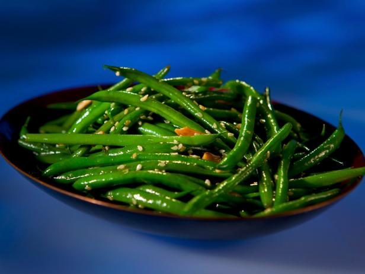

Green Bean Sauce

- 2 hard-boild eggs, chopped
- 1 cup mayonnaise
- .5 teaspoon prepared horseradish
- .5 teaspoon lemon juice
- .25 teaspoon salt
- .125 teaspoon ground black pepper
- 1 pinch garlic powder
- 1 pinch dried parsley, or to taste
- 1 dash Worcestershire sauce, or to taste
-
Mix the eggs, mayonnaise, horseradish, lemon juice, salt, black pepper, garlic powder, parsley, and Worcestershire sauce in a bowl until well blended.